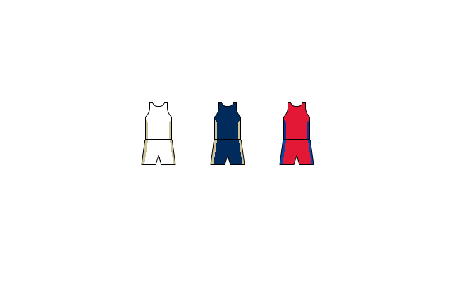

Un peu au sujet des Pélicans
Les Pélicans de La Nouvelle-Orléans sont une équipe de basket dans la ligue NBA.
Ils participent à la conférence de l'Ouest.
Les Pélicans jouaient sous les Hornets jusqu'aux années 2012-13.
Pour plus d'information, appuyez sur le logo ci-dessus pour être.
